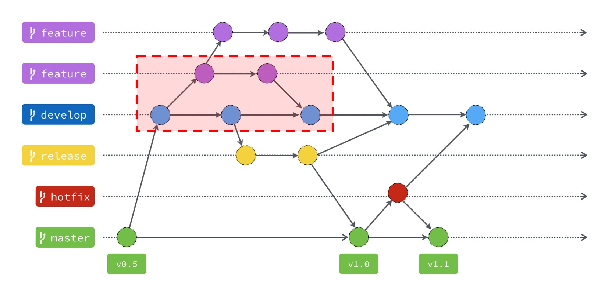
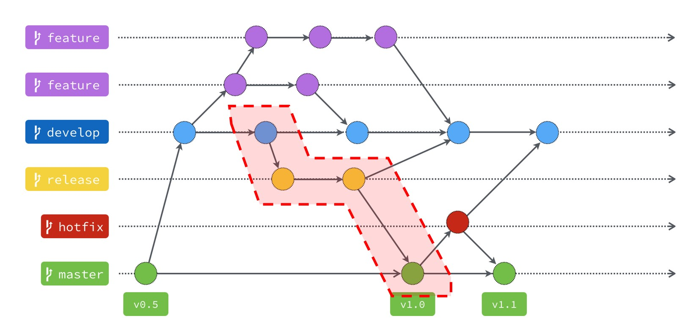

Git Flow
什麼是Git Flow? 為什麼需要?
當同一個專案越蓋越大、開發與參與人數越來越多，抑或是未來需要交接時，Git Flow就格外重要了，他是一套標準化的規範，無論你在我們中心或是未來就業，原則上都應該依照這套規範去執行，並且嚴格的執行! 倘若每個人Commit的習慣都不一樣，沒有一套標準，放任大家隨便Commit，那未來無論是自己、參與開發的人、協助測試的人..到交接專案，都會是一場巨大災難。
前言
網路上已經有非常多介紹Git flow的文章，我辛辛苦苦幫大家整理基本重點，請大家務必閱讀並理解這些東西到底在幹嘛，了解Git flow後，你就不會覺得把程式碼推上Git好像只是在放到雲端一樣了。
分支的應用
Git flow的分支在不同的專案或需求中，多多少少會不太一樣，本章節會介紹我們研究中心主要且最常用的分支，與你在未來可以自行調整、自行依照需求去控管的分支。
1. 主要分支類型:
master: 用來放穩定、隨時可上線的版本，控管時不能直接Commit master，master必須是合併到其他已經是穩定版本的分支，並且可以在上面加上Tag，標記版本號。
延伸閱讀: Version control
develop: 開發用的基礎分支，當你在蓋一個專案時，所有過程中的commit原則上都是推長在develop這支分支上，並且feature也都應該是從develop往外長，並且feature完成後，合併回develop分支。
feature: 為develop再切出來的分支。若需要新增功能時，就會使用feature分支，新功能開發並測試完畢後，則再merge回develop。
2. 其他分支類型:
Hotfix: 當已上線的版本突然出現了某種緊急問題時，可以建立一支Hotfit分支用以解決當前的緊急狀況，若解決完畢，則merge回你該個版本與develop分支。
Release/Product: 版本/產品分支，主要用於你develop分支已經可以是出新版本時，將這個新版本推到Release或是Product分支，並給予版本號。
Git flow流程圖解
圖說明
案例說明
案例1. 協作開發新功能
你本來在開發這個專案，此時專案中有另一人來協助開發新功能。
你: 請你從v0.5開始開發
協作夥伴: 了解。
當協作夥伴開發完新功能的同時，你也推好幾支commit在develop，此時就要由你來將他的分支merge回到develop並過濾掉衝突。
案例2. 發佈新版本

你已經開發完該階段的專案需求，此時你會將該develop的版本merge到release分支中。
此時，可能是你自己或測試工程師會開始測試你release的版本，過程中肯定會測出一些bug，你接續改完這些bug後，最終就會將該版本推到master，並同步把這些bug也merge到develop分支，以避免未來發生一樣的bug。
案例3. 上線中版本出現緊急問題
當上線中的版本突然出現了一些預料外的狀況，好比說客戶突然回報了一個問題是之前都沒測出來的。
此時，你可以趕緊切回上線的版本，並建立一支分支: hotfit/issue-name，然後著手開始解決這個棘手的問題。解決完畢後，再將此分支merge到develop，避免未來發生一樣的問題，同時，也發佈新的版本給客戶。